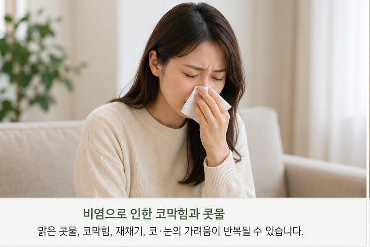
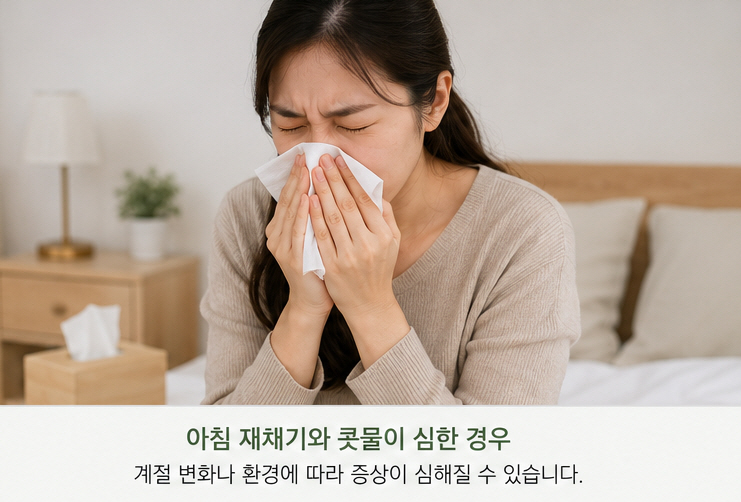
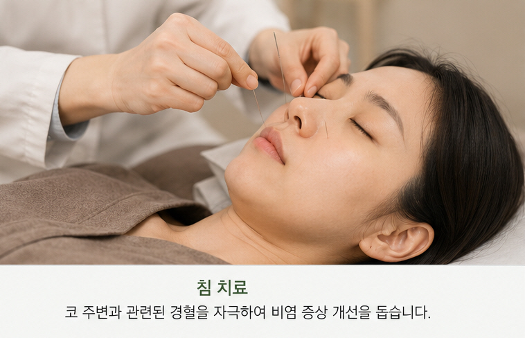
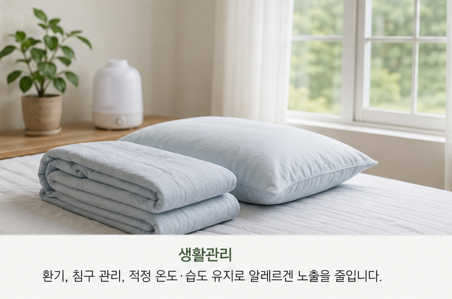

계절이 바뀔 때마다
콧물과 재채기가
반복되시나요?
맑은 콧물, 코막힘, 반복적인 재채기, 코와 눈의 가려움 등은 알레르기 비염에서 흔히 나타날 수 있는 증상입니다.

알레르기 비염에서 흔히 나타나는 증상
증상의 정도와 나타나는 시기는 사람마다 다를 수 있습니다.
맑은 콧물
물이 흐르듯 맑은 콧물이 반복적으로 나타날 수 있습니다.
코막힘
한쪽 또는 양쪽 코가 막히면서 숨쉬기가 답답하게 느껴질 수 있습니다.
반복적인 재채기
특정 계절이나 환경에서 여러 번 연속해서 재채기가 나기도 합니다.
코·눈의 가려움
코 안이나 눈 주변이 가렵게 느껴지는 경우도 있습니다.
아침에 심한 증상
기상 직후 콧물이나 재채기가 더 심하게 느껴지는 분도 있습니다.
계절에 따라 반복
환절기나 특정 계절에 증상이 반복적으로 심해질 수 있습니다.

어떤 환경에서 심해지는지도 중요합니다
알레르기 비염은 꽃가루, 집먼지진드기, 곰팡이, 동물 유래 알레르겐 등 여러 환경적 요인과 관련될 수 있습니다.
계절이 바뀔 때 증상이 심해지는지, 청소나 이불 정리 후 재채기가 심한지, 특정 환경에서 콧물이나 가려움이 반복되는지 등을 진료 시 함께 말씀해주시면 좋습니다.
감기 증상도 함께 진료합니다
콧물과 코막힘이 있다고 모두 알레르기 비염인 것은 아닙니다.
감기에서는 콧물·코막힘과 함께 목의 불편감, 기침, 가래, 몸살감이나 발열 등이 동반될 수 있습니다.
증상이 시작된 시점과 변화, 동반 증상 등을 살펴 현재의 호흡기 상태를 함께 확인합니다.
알레르기 비염
맑은 콧물, 반복적인 재채기, 코·눈 가려움 등이 나타날 수 있으며 특정 계절이나 환경에서 반복되기도 합니다.
감기
콧물·코막힘과 함께 인후 불편, 기침, 가래, 몸살감이나 발열 등이 동반될 수 있습니다.
증상에 따라 건강보험 한약제제를 처방하기도 합니다
감기나 비염 등 호흡기 증상을 진료한 뒤 현재의 상태에 따라 건강보험이 적용되는 한약제제를 처방할 수 있습니다.
가루 형태의 제제뿐 아니라 복용하기 편한 연조엑스제 등 여러 형태의 보험한약을 활용하는 경우도 있습니다.
구체적인 처방과 건강보험 적용 여부, 본인부담금은 진료 내용과 처방에 따라 달라질 수 있습니다.
현재 증상에 따라 진료 방법을 선택합니다
모든 치료를 모든 환자에게 동일하게 시행하지 않습니다.
침 치료
코 주변과 전신의 상태를 살펴 필요한 경우 침 치료를 활용할 수 있습니다.
한약 · 보험한약
콧물, 코막힘, 재채기, 인후 불편이나 기침 등 현재 증상에 따라 한약 처방을 상담할 수 있습니다.
외용제
코 점막의 건조함이나 불편 등 현재 상태에 따라 외용제 사용을 상담하는 경우도 있습니다.

비염은 생활환경도 함께 살펴보세요
외출 후 손 씻기
감염성 호흡기 질환 예방을 위해 기본적인 손 위생을 지키는 것이 중요합니다.
침구류 관리
침구류와 실내 환경을 청결하게 관리하고 먼지가 많이 쌓이지 않도록 해주세요.
환기와 실내환경
실내 공기가 지나치게 건조하거나 답답하지 않도록 적절히 환기하고 관리해주세요.
알레르겐 노출 확인
본인에게 증상을 유발하는 꽃가루, 집먼지진드기 등 알레르겐이 확인되어 있다면 노출을 줄이는 것이 중요합니다.
따뜻한 물 마시기
목과 코가 건조하게 느껴질 때는 물을 충분히 마셔 수분을 유지하는 것이 좋습니다.
증상 기록하기
아침, 외출 후, 청소 후 등 언제 증상이 심해지는지 기록하면 진료 시 도움이 될 수 있습니다.

집에서 가볍게 눌러볼 수 있는 부위
지압은 통증이 생길 정도로 강하게 누르기보다 편안한 정도의 자극으로 가볍게 시행해주세요.
콧방울 옆과 팔자주름이 만나는 주변을 부드럽게 눌러볼 수 있습니다.
영향혈보다 위쪽, 코 옆 부위를 편안한 정도로 눌러볼 수 있습니다.
이마 중앙에서 머리카락이 시작되는 부위보다 조금 위쪽을 가볍게 눌러볼 수 있습니다.
팔꿈치를 구부렸을 때 생기는 주름 바깥쪽 끝 주변을 눌러볼 수 있습니다.
지압은 비염의 진단이나 치료를 대신하지 않습니다. 증상이 심하거나 지속되면 의료기관에서 진료받으시기 바랍니다.
비염·감기 진료에서 자주 듣는 질문
비염인지 감기인지 잘 모르겠어요.
알레르기 비염은 맑은 콧물, 반복적인 재채기와 가려움 등이 특징적으로 나타날 수 있습니다. 반면 감기에서는 목의 불편, 기침, 몸살감이나 발열 등이 함께 나타나는 경우가 있습니다. 실제 증상은 겹칠 수 있어 경과와 동반 증상을 함께 살펴봅니다.
왜 아침에 일어나면 재채기와 콧물이 심한가요?
수면 중 접촉한 침구류나 실내환경, 기상 후의 환경 변화 등에 따라 아침에 증상이 두드러지는 분도 있습니다. 언제 증상이 심해지는지를 함께 확인하는 것이 좋습니다.
집먼지진드기나 꽃가루가 원인이 될 수 있나요?
네. 꽃가루, 집먼지진드기, 곰팡이, 동물 유래 물질 등은 알레르기 증상을 유발할 수 있는 대표적인 알레르겐입니다.
비염이 있으면 눈도 가려울 수 있나요?
알레르기 증상이 있는 분들 가운데 코 증상과 함께 눈의 가려움이나 불편을 호소하는 경우도 있습니다.
감기에도 한약 처방을 받을 수 있나요?
네. 현재의 콧물, 코막힘, 목의 불편, 기침 등의 증상과 상태를 확인하여 한약제제를 처방할 수 있습니다. 진료 내용에 따라 건강보험이 적용되는 한약제제를 사용하는 경우도 있습니다.
보험한약은 일반 한약과 다른가요?
건강보험 한약제제는 정해진 한약제제 중 현재의 증상과 진료 내용에 따라 처방할 수 있는 제제입니다. 구체적인 처방과 건강보험 적용 여부는 진료 후 결정됩니다.
침 치료도 함께 하나요?
현재의 비염 증상과 전반적인 상태에 따라 침 치료를 한약 등 다른 진료방법과 함께 고려할 수 있습니다.
아이도 비염이나 감기 증상이 반복될 수 있나요?
아이도 콧물, 코막힘, 재채기 등 비염이나 감기와 관련된 증상이 나타날 수 있습니다. 연령과 상태를 고려하여 진료방법을 결정합니다.
생활관리에서 가장 중요한 것은 무엇인가요?
본인에게 증상을 유발하는 환경을 파악하고 가능한 범위에서 노출을 줄이는 것이 중요합니다. 침구류와 실내환경 관리, 손 위생과 충분한 수분 섭취 등 기본적인 생활관리도 함께 신경 써주세요.